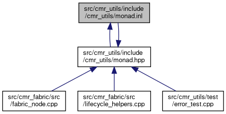

#include "cmr_utils/monad.hpp"
Include dependency graph for monad.inl:

This graph shows which files directly or indirectly include this file:

Namespaces | |
| namespace | monad |
| Namespace of helper functions for monads. | |
Functions | |
| template<typename T , typename Func > | |
| constexpr auto | monad::bind (T &&monad, Func f) noexcept(noexcept(f(monad.value()))) -> std::enable_if_t< is_monad_like_v< T >, std::remove_reference_t< decltype(f(monad.value()))> > |
| Converts a monad of one type to a monad of another type. More... | |
| template<template< typename > class T, typename U , typename Func > | |
| constexpr auto | monad::map (const T< U > &monad, Func f) noexcept(noexcept(f(monad.value()))) -> std::enable_if_t< is_monad_like_v< T< U > >, T< std::remove_reference_t< decltype(f(monad.value()))> > > |
| Converts a monad of one type to a monad of another. More... | |
| template<typename T , typename U > | |
| constexpr auto | monad::value_or (T &&monad, U &&default_val) noexcept -> std::enable_if_t< is_monad_like_v< T >, U > |
| Gets the value contained within the monad or the default if it is empty. More... | |
| template<typename T , typename Func > | |
| constexpr auto | monad::value_or_else (T &&monad, Func f) noexcept(noexcept(f())) -> std::enable_if_t< is_monad_like_v< T >, std::remove_reference_t< decltype(monad.value())> > |
| Gets the value contained within the monad or the value returned by the function if it is empty. More... | |